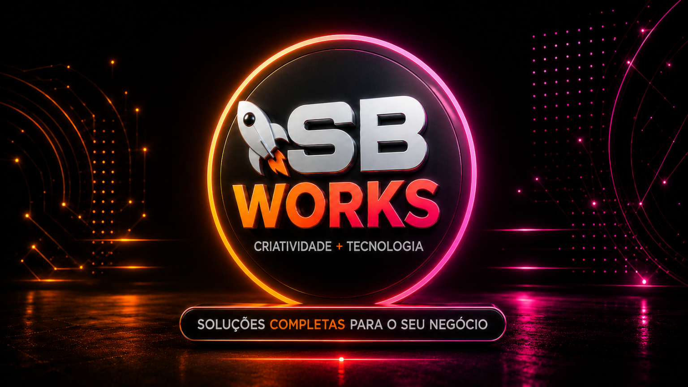

⚔
Arena 1v1
Duelos competitivos com ranking e apostas em SC.
Um hub gamer all-in-one que une Discord, economia digital, inteligência artificial, RPG, marketplace, comunidades e Minecraft.
Na Supremacy, o perfil, a reputação e a economia atravessam web e Discord. Interações, jogos e eventos podem gerar Supremacy Coins, usadas dentro do próprio ecossistema.
Duelos competitivos com ranking e apostas em SC.
Carteira, extrato, transferências e recursos de investimento.
Assistente de IA integrado ao painel e ao Discord.
Insígnias, molduras, itens colecionáveis e benefícios VIP.
Progressão, batalhas e atividades diretamente nos chats.
Servidores conectados, divulgação por BumpHub e reputação global.
Status, rankings, economia e integração entre jogo, web e Discord.
Criação, investimento, salários e distribuição de resultados no ecossistema.
Sorteios, quizzes e competições que mantêm a rede em movimento.
Autenticação, transações P2P e painel administrativo centralizado.
Interaja, complete missões, jogue e participe de eventos.
As moedas chegam à carteira integrada.
Use em itens, cargos, arenas ou recursos do ecossistema.
Seu perfil acompanha você entre comunidades e painel.
Informações resumidas a partir da apresentação pública da Supremacy em julho de 2026. Recursos, taxas e disponibilidade devem ser confirmados no site oficial.
Uma parceria para transformar boas ideias em marcas claras, sites fortes e experiências digitais que transmitam autoridade e confiança.

A SB WORKS cria marcas e experiências digitais para empresas que precisam transmitir profissionalismo antes mesmo da primeira conversa. O trabalho combina estética, estratégia e funcionalidade para aumentar autoridade, confiança e clareza.
Identidades, criativos, campanhas e vídeos desenvolvidos com intenção — não apenas para parecer bonitos, mas para comunicar e vender melhor.
Produtos rápidos, responsivos e marcantes, da primeira landing page a plataformas completas com tecnologia alinhada ao negócio.
Um processo claro, com alinhamento em cada etapa e visibilidade sobre o que está sendo construído.
Entender negócio, público e objetivo.
Definir direção, prioridades e plano de ação.
Criar uma experiência visual exclusiva.
Transformar a direção aprovada em produto funcional.
Conteúdo resumido a partir da apresentação pública da SB WORKS em agosto de 2026. Portfólio, serviços e disponibilidade devem ser confirmados no site oficial.